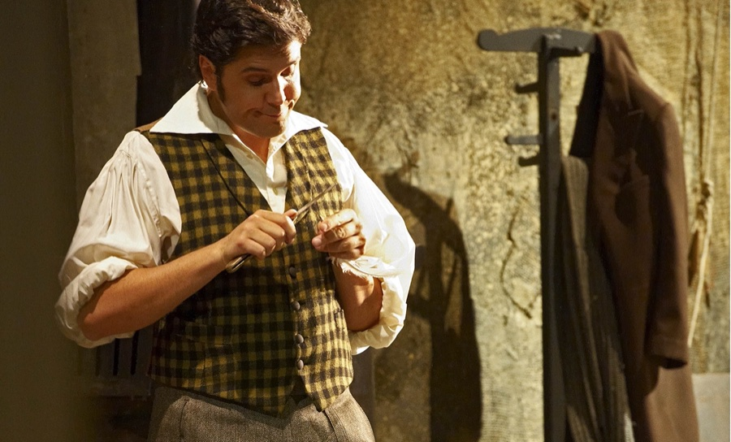
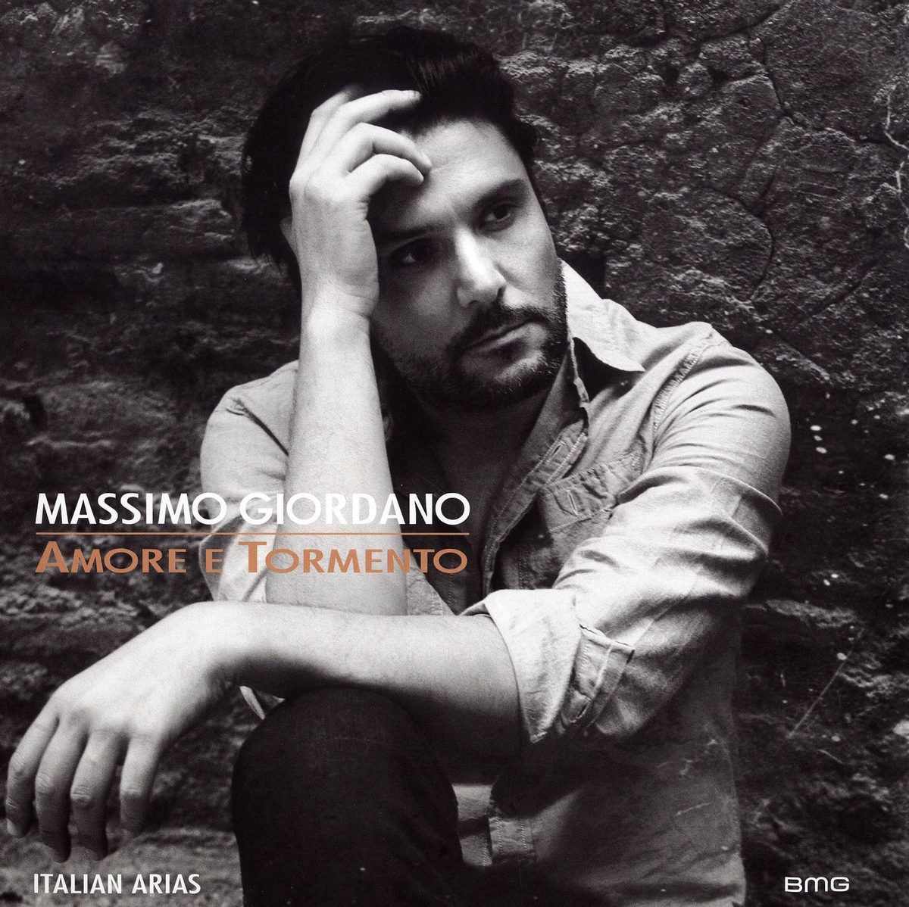

Biography
How it started
Nearly three decades on the great stages of Europe and America, and a second act spent building the evenings instead of only singing them.
He grew up inside a conservatory, where his father was the caretaker, and trained as a flautist. He found his voice days before his flute diploma. The professional debut came in 1997, in Spoleto.
Three years later he was singing at the Metropolitan Opera. Then La Scala, the Vienna State Opera, Covent Garden, the Opéra national de Paris, the Bavarian State Opera: Rodolfo, Alfredo, Cavaradossi, Des Grieux, Don Carlo, Werther, Andrea Chénier, in houses where nothing can be fixed afterwards.
Today the stage is only part of it. He programmes a festival in Cyprus, produces concerts, and teaches a full singing class at the Conservatory in Cagliari, where what he passes on is what no recording can carry: how a role is actually built, and how it holds up night after night.
Abbado · Chailly · Maazel · Rattle · Mehta · Pappano · Levine

Today
Three things at once
On stage
Opera and concert. Cavaradossi, Don Carlo, Don José, Andrea Chénier, Des Grieux, pairing Verdi, Puccini and Gounod with Neapolitan song.
Festival & production
Artistic Director of the Minthis Music Festival in Paphos, Cyprus, three editions since 2024, a fourth confirmed for 2027 and co-founder of Laimtee, which produces classical concerts and theatre.
Conservatory teaching
Professor in the singing class at the Conservatorio Statale di Musica “Giovanni Pierluigi da Palestrina” in Cagliari. A full teaching post in a state institution, not an occasional masterclass.
Repertoire
Selected roles
- Cavaradossi Tosca Bavarian State Opera · Vienna State Opera · Covent Garden · Metropolitan Opera · Opéra national de Paris · San Francisco Opera · Bolshoi Theatre
- Rodolfo La bohème Metropolitan Opera · Opéra national de Paris · Covent Garden · Bavarian State Opera · Vienna State Opera · Semperoper Dresden
- Alfredo Germont La traviata Metropolitan Opera · La Scala · Vienna State Opera · Deutsche Oper Berlin · Bolshoi Theatre · Santa Fe Opera
- Des Grieux Manon · Manon Lescaut Metropolitan Opera · La Scala · Vienna State Opera · Covent Garden · Baden-Baden Easter Festival (Berliner Philharmoniker, Sir Simon Rattle)
- Don Carlo / Don Carlos Verdi Maggio Musicale Fiorentino (Zubin Mehta) · Deutsche Oper Berlin · Dutch National Opera · Stuttgart Opera (French version)
- Werther Massenet Bavarian State Opera · Opéra national du Rhin · Opernhaus Zürich · Théâtre du Capitole, Toulouse
- Andrea Chénier Umberto Giordano Vienna State Opera, Marco Armiliato, directed by Otto Schenk



Media
Video
Recording
Amore e Tormento

BMG Rights Management · released 6 May 2013 · Ensemble del Maggio Musicale Fiorentino, Carlo Goldstein
The debut solo album: celebrated Italian arias from Tosca, Andrea Chénier, Turandot, L’Arlesiana and Adriana Lecouvreur, alongside lesser-known pieces, among them “Dolce notte misteriosa” from Umberto Giordano’s Marcella.
Also on record
- 2000Verdi gala, Berliner Philharmoniker New Year’s Eve Concert under Claudio Abbado, released as Gala from Berlin 2000 · Tutto nel mondo; the concert can be watched in the orchestra’s Digital Concert Hall
- 2000Massenet, Le Jongleur de Notre-Dame, Teatro dell’Opera di Roma, live recording
- 2001Verdi, I Lombardi alla prima crociata (Oronte), Tiziano Severini, with Dimitra Theodossiou and Giorgio Surian, live from the Teatro Ponchielli, Cremona, Dynamic CDS390
- 2004Puccini, Gianni Schicchi (Rinuccio), Glyndebourne Festival, DVD Opus Arte OA0918D
- 2006Massenet, Manon (Des Grieux), the Act III duet with Renée Fleming, live at the Metropolitan Opera under Jesús López Cobos, 2006, released 2023 on Her Greatest Moments at the MET, Decca
- 2007Puccini, Il trittico (Rinuccio in Gianni Schicchi), Metropolitan Opera, James Levine, production Jack O’Brien, broadcast live in cinemas worldwide on 28 April 2007 in the Met’s first Live in HD season, then on PBS Great Performances at the Met
- 2007Verdi, La traviata (Alfredo), Teatro Regio di Parma, Festival Verdi, 9, 13 and 15 October 2007, Yuri Temirkanov in his Italian opera debut, production Karl-Ernst and Ursel Herrmann, with Svetla Vassileva and Vladimir Stoyanov, DVD C Major 723608
- 2008Donizetti, Imelda de’ Lambertazzi (Lamberto), Orchestra of the Age of Enlightenment, Mark Elder, with Nicole Cabell and Frank Lopardo, recorded live at the Queen Elizabeth Hall, London, 10 March 2007, Opera Rara
- 2010Bizet, Carmen (Don José), Vienna State Opera, Zeffirelli production under Andris Nelsons, with Anna Netrebko; filmed by Unitel
- 2015Verdi, Puccini, Donizetti, Bellini, Mozart, Bella Italia!, New Year’s Eve gala from the Festspielhaus Baden-Baden, SWR Sinfonieorchester Baden-Baden und Freiburg, Gérard Korsten, with Angel Blue and Erwin Schrott, produced for ARD, SWR and 3sat
Follow
Where he is, every day
Rehearsals, stages, cities. The things that do not end up in a biography.